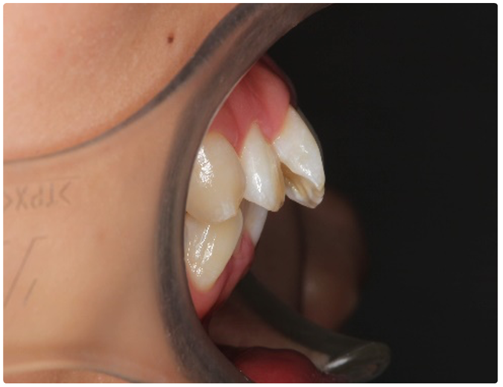
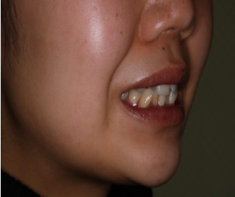

User name (job title)
臨床的に深度を決める上では極端なGBRは手間もかかりますので、額賀先生がおっしゃるように、「開創した上でインプラントを良さそうな位置に決める」方が現実的ではないでしょうか？ 歯…Read more


臨床的に深度を決める上では極端なGBRは手間もかかりますので、額賀先生がおっしゃるように、「開創した上でインプラントを良さそうな位置に決める」方が現実的ではないでしょうか？ 歯…Read more
抜歯後、一時的に熱が出ることはありますよ。 菌血症と呼ばれるものでしょう。一時的に菌が血管に入って熱が出るという反応です。年齢や基礎疾患にもよりますが、通常は何日も発熱が続くことは少ないこと…Read more